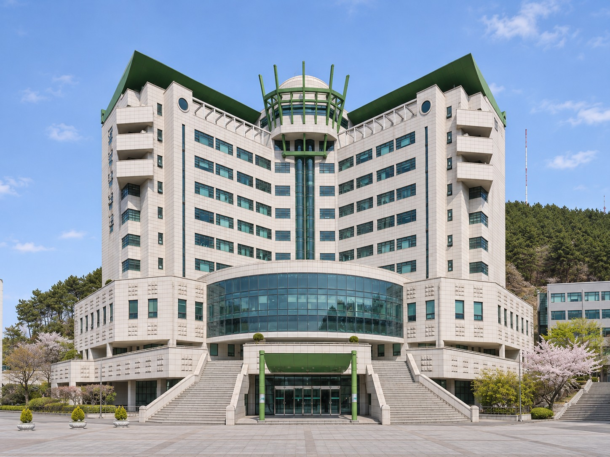
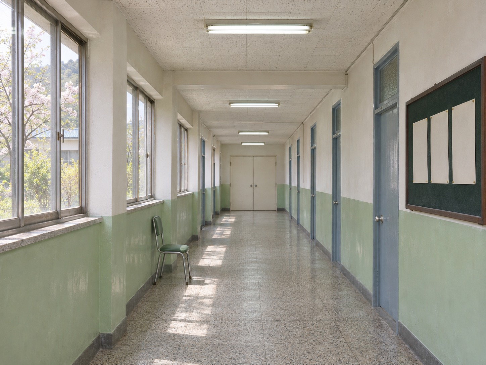
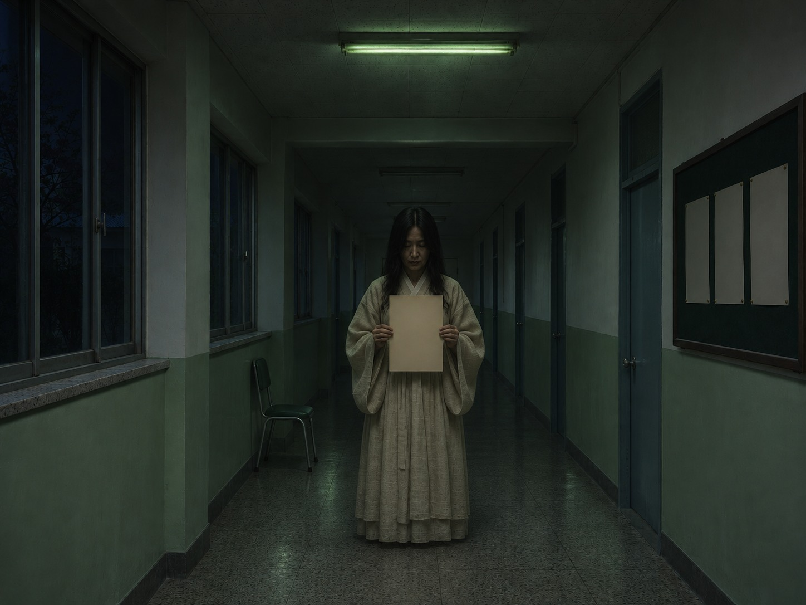
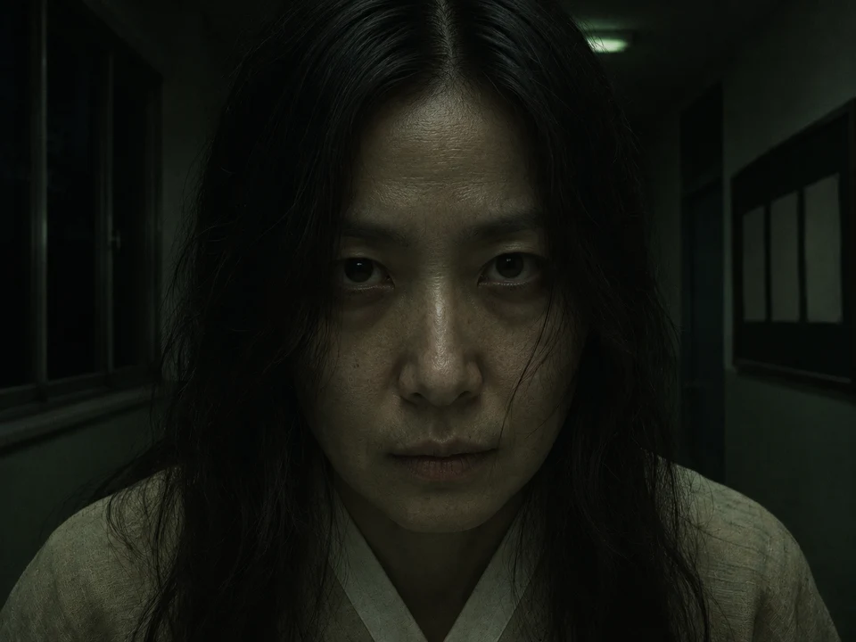

실종 기록 안내방송
전시용 창작 방송

지역 실종안내 자료 · 전시용 재구성

자료 화면 · 04–017마지막 목격 장소

전시 PC에서 웹캠을 고른 뒤 시작을 누르세요. 브라우저에서 카메라를 허용하면 방송이 시작됩니다.
얼굴 삽입을 켜면 관객 얼굴이 공지에 잠시 표시됩니다. 영상과 사진은 기기 안에서 처리하고 회차가 끝나면 지웁니다.
전시 위치에서 먼 점과 촬영할 가까운 점에 차례로 서서 기록하세요.
기본 창작 인물 사진
데모에서 마우스를 화면 위쪽으로 움직이면 접근, 화면 밖으로 나가면 이탈합니다. 운영실 D · 수동 송출 Space · 전체화면 F · 소리 M